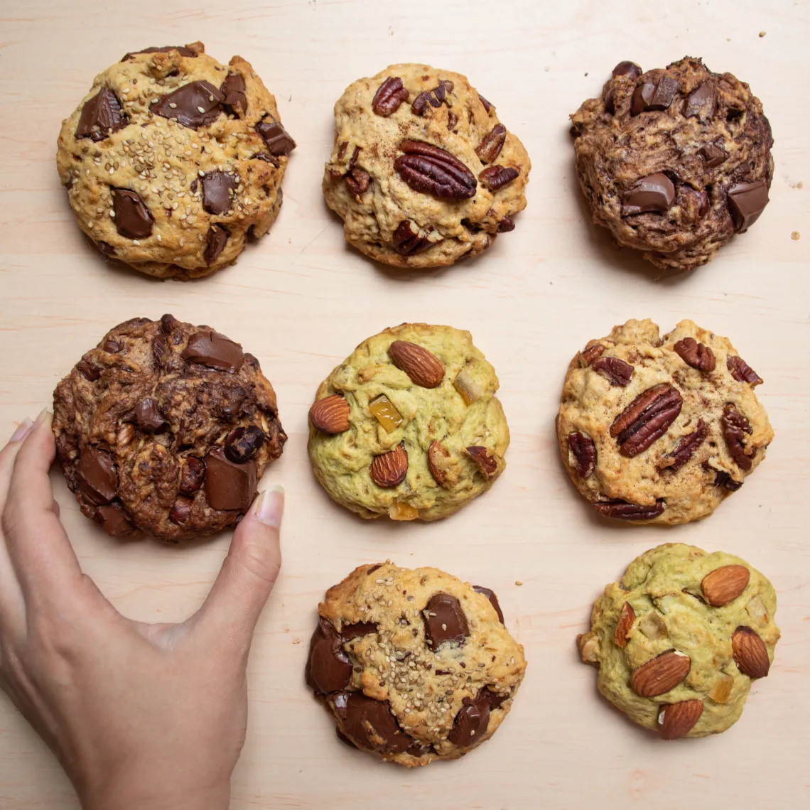

Recette de cookies
Recette de cookies
Recette pour 6 personnes !

Ingrédients :
- 1 Oeuf
- 85g de sucre
- 85g de beurre
- 150g de farine
- 100g de pépites de chocolate
- 1 sachet de sucre vanillé
- 1 cuillère à café de levure chemique
- 1/2 cuillére à café de sel
Préparation :
- Laissez ramollir le beurre à temperature ambiante. Dans un saladier, malaxez-le avec le sucre.
- Ajoutez l'oeuf et éventuellement le sucre vanillé.
- Versez progessivement la farine, la levure chimique, le sel et les pépites de chocolat. Mélangez bien.
- Beurrez une plaque allant au four ou recouvrez-la d'une plaque de silicone. À l'aide de deux cuillères à soupe ou simplement avec les mains, formez des noix de pâte en les espaçant car elles s'étaleront à la cuisoon.
- Faites cuires 8 à 10 minutes à 180ºC soit thermostat 6. Il faut les sortir dès que les contours commencent à brunir.